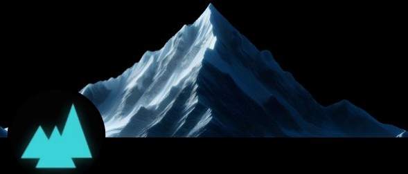

Transforming slow, underperforming websites into lightning-fast experiences that both visitors and search engines love.
We achieve this through a two-pronged approach: First, our service intelligently optimizes your site's resources (compressing images, reducing and minimizing code, prioritizing critical content) to dramatically reduce load times.
Second, we create specialized versions of your pages that search engines can index instantly, boosting your visibility in search results. This balance of user experience and search performance delivers concrete business results: 90%+ PageSpeed scores, higher search rankings, and increased conversion rates.
Connect your site, and our AI-powered cloud infrastructure handles the complex optimization work automatically.
Technologies
- Optimizing HTML, CSS, JavaScript, images, and fonts to improve performance utilizing OpenAI
- Hosting and CDN with Azure Kubernetes and Front Door
- Problem explanation video (linked below) created using InVideo AI with voice cloning from a recording of my fiancée